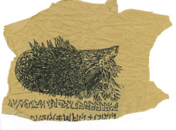
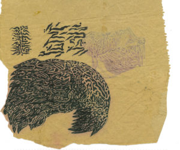

Understanding vaccine hesitancy at the time of CoViD
ExTemporanea
February 15, 2022

A conversation with Jennifer A. Reich, author of Calling the Shots: Why Parents Reject Vaccines (New York University Press, 2016)
«I don’t consult a doctor for it, and never have, though I have a respect for medicine and doctors. Besides, I am extremely superstitious, sufficiently so to respect medicine, anyway (I am well-educated enough not to be superstitious, but I am superstitious). No, I refuse to consult a doctor from spite.»
Fyodor Dostoevsky, Notes from the Underground
In-field research & methodology
eXt: Are you still involved in monitoring the acceptance of vaccines, both for corona virus (CV in the following) and other diseases? If so, how did your work adapt to restrictions due to social distancing — e.g. did you replace ethnographic observations with other types of data collection?
JR: Calling the Shots was published in 2016 and I continued to write articles for the next couple of years. When the Covid-19 pandemic began and US leaders began promising that vaccines would be the way out of the pandemic, I became concerned. I was not just worried that a poorly handled covid vaccine roll-out would be harmful, but also that a badly managed covid vaccine could reduce trust in all vaccines. So I began writing more for popular audiences and monitoring the shifting conversations very closely.
Over the past two years, I have been involved different aspects of understanding vaccine politics. I have been a member of the Colorado Vaccine Equity Task Force, which brings together different community members and leaders to discuss how to improve access to vaccines, and am a regular volunteer for clinics giving vaccines. I am also analyzing many online discussions and presentations to understand how people perceive covid vaccines.
Demographics
eXt: In your book you focused on a specific segment of people who refuse (part of) the vaccine schedule: mostly affluent mothers with college education. Do you have any intuition on how the demographics of vaccine opposition may have changed after CV, and why? In particular, is it possible to talk about “groups” or “movements” of resistance, or is vaccine opposition a mostly individual choice?
JR: Historically, vaccine opposition has spanned the entire political spectrum, with people who identify as politically different often saying very similar things about vaccines. This was true in my research too. Since covid-19 began, we have seen greater resistance to vaccines from people who identify as conservative. That remains the greatest predictor in the US of who says they definitely do not want a vaccine against covid https://www.kff.org/coronavirus-covid-19/dashboard/kff-covid-19-vaccine-monitor-dashboard/.
In some ways, this is not surprising. Prior to covid-19, the US had a president who encouraged people to question experts and reject scientists and public health leaders who had been in their positions for decades. As you saw in my book, people always trust their own judgment most, but gather information from a wide variety of sources. This messaging reduces information-seeking from medical and scientific experts as among those sources.
Direct connection
eXt: After reading your book, at times it seems that — despite upholding different choices — you were curious of the lifestyle and positions of families who refused the ordinary vaccine schedule. Is this impression correct? If so, do you have any fascination — beyond professional — for the positions and choices of people who refuse CV vaccines? Are you in friendship with some of these groups/people?
JR: I am fascinated by how all families make decisions for their children and themselves. Virtually all of us make decisions without understanding everything about it based on who we trust, what we know, what we feel, and what our values and beliefs are. What brought me to questions of vaccine decisions was fascination with how parents weigh expert advice to make decisions for themselves. What I learned from the parents in my study was that lifestyle—including diet, vitamins, breastfeeding, and household purchases—were decisions that were linked to vaccine decisions and revealed what they thought they could control in terms of their children’s health on their own without vaccines.
We see similar patterns with c19 vaccines. Individuals who reject vaccines often describe themselves as healthy or as working hard to promote good health, which they imagine makes the vaccines less important.

Severity
eXt: In your book, you often emphasize a simple but important fact: vaccine hesitancy is correlated with the perceived severity of the illness. Do you think that SARS‑CoV‑2 may be have been perceived as a relatively mild disease, worth coping with? If so, which other aspects of personal health may be at stake when pondering on the CV vaccine?
JR: Early in the pandemic, messaging was very clear that covid was most dangerous to those who were older or who had underlying immune-compromising health conditions. This likely set up the dynamic where young adults would be least interested in getting the vaccine and least likely to believe they need it.
Among those who are actively promoting a view that vaccines are not safe or effective, many insist that the number of covid-related deaths is overestimated and make the claim that 99.8% of people recover. So we will continue to see covid vaccines play out around disagreements about its severity.
Purity
eXt: In her book Purity and Danger anthropologist Mary Douglas states that concern towards contagion and loss of purity derives from contact with abnormal elements. In the case of infectious diseases, this is brought by viruses and bacteria. However, people who refuse vaccines often attribute danger to the content of the vaccine itself — a substance that could undermine the integrity of the organism.
How does this reflect the boundary posed by western cultures between natural and artificial, and how is this dichotomy present in the stories that you collect in your research?
JR: Parents in my study often reference how vaccines undermine the body’s natural ability to heal and thus, present a risk to the purity of the body. I talk about how parents identify things they consider “natural” to be superior and since vaccines they see as artificial, they are inferior. This plays out in terms of insistence that “natural immunity” that is, immunity derived from wild virus infection is superior. We are seeing this right now around arguments of how immunity derived from covid infection should be viewed and whether it is equivalent to vaccination.
Choice
eXt: In your book, you suggest that health in the US is more and more the result of a complex system of individual choices that depend exclusively on the ability of the individual to make the right decision — a consumeristic model whereby the patient is a
customer choosing among different products, such as drugs or treatments, rather than a social actor with agency. Which believes underlie the idea that we are primarily responsible for our health? Has the spread of CV confirmed or even exhacerbated this tendency?
On the other hand, the unequal approval and dissemination of vaccines at a global scale has shown that freedom of choice is restricted to a minority of people. In Italy, the introduction of a “green pass” has forced many people to get vaccinated against their will to avoid a suspension at work and a loss of salary, while in economically poorer countries a vast number of people do not have access to the vaccine. What is the relationship between class privilege and choice?
JR: For the past several decades, we have seen increasing demands for personal responsibility. This has taken hold in changes to social support programs, privatized healthcare, or the sale of genetic testing that promises to help you manage your personal risk. A range of daily products—apps, magazines, websites, watches—promise to help you manage your health. Throughout, we see the promotion of a belief that if you work hard, you can avoid illness. Unfortunately, this is just not true. While diet and lifestyle may help, much of disease comes from environmental factors, genetics, and bad luck. Yet, the belief in personal responsibility to promote health permeates most of the messaging in opposition to vaccines. I heard it in my research and I hear it daily from those who oppose vaccines and are often selling what they call wellness products.
These cultural factors that promote individualistic views of health are powerful and ubiquitous. They are not just about vaccines and thus, they resonate across our societies.
Programs like the Green Pass highlight how we are interconnected. Yet, these connections should be visible in less coercive and more supportive ways as well. These same messages of community responsibility should be put forward to make sure workplaces are safe, that drinking water is clean, that buildings have excellent ventilation and are free of toxins. We should hear this community responsibility in ways that promote inclusion, and not just exclusion. I am not suggesting that vaccines do not benefit communities. Instead, I am suggesting that community strategies to promote health should promote health outside pandemics and in ways beyond vaccines.

Rule of experts vs. popular knowledge
eXt: The scientific revolution separated science — and its laboratories — from society. Ever since, the formal knowledge of experts has been at times flanked, at times opposed by the informal knowledge of citizens. This latter sometimes feeds back to the former. As an example — that may be tangentially relevant to the present discussion — we propose the case of obstetrics, which in affluent communities is undergoing a silent revolution fed by the understanding of mothers and midwives who are critical of a certain view of pregnancy as an illness and the medicalization of childbirth. Now back to CV: people are loosing faith in official data and undertake their own research to identify the causes and the most effective solutions for the disease. These people may also be the most vulnerable to the effects of the virus and of its social consequences. What kind of expertize do they claim, and what can we learn from them?
JR: Individuals are frequently encouraged to “do their own research” and I hear this often in the vaccine context. I realized as I wrote Calling the Shots that in many ways, the concept of research has been flattened. Research by definition highlights the importance of gathering information systematically to create generalized knowledge. Now, we often reference how we are researching big purchases, like cars or appliances, or we are researching a new restaurant. In this consumerist way, “research” is now the term used for a process of gathering information to make consumer choices for ourselves, but not as a way to create knowledge.
«In this consumerist way, “research” is now the term used for a process of gathering information to make consumer choices for ourselves, but not as a way to create knowledge.»
This is not to suggest that individuals should not weigh information from a variety of sources to make a decision that feels personally appropriate. Rather, it is important to recognize that research is actually something different that creates the possibility of knowing something beyond any individual. It is one of the reasons that it is hard to reconcile a personal experience with population level data. Both are important but they provide different tools.
I am a strong believer that health movements have often changed healthcare for the better. There are many examples of groups speaking back to experts that have led to better practice and better care. We can see this with the women’s health movement, activism around AIDS, and in the voices of advocacy organizations that have highlighted the personal experiences that medical providers often overlooked. There are many ways of knowing and many kinds of knowledges. My research highlights the importance of empathy and dialogue.
Conspiracies
eXt: Communities that pose doubts about vaccines are often mocked because of belief in conspiracy theories. How do these theories relate to the theme of the claimed own expertize? Could the numerology purported by dashboards and television programs be part of the creation of a culture of conspiracies?
JR: To have a dialogue requires some common facts. One can come to choose not to accept a vaccine without believing a conspiracy. However, during covid-19, I have seen a huge growth in beliefs that question whether the pandemic is real, that assert that vaccines are part of depopulation plots, or that claim other kinds of conspiracies that are factually untrue and even implausible. This makes dialogue challenging. Nonetheless, we don’t have any examples of people changing their minds when mocked or ridiculed. So this is not a particularly productive path forward. Individuals should always be able to ask questions. They should also be open to answers that challenge their views. And to do this, there must be trust.
«Nonetheless, we don’t have any examples of people changing their minds when mocked or ridiculed. Individuals should always be able to ask questions. They should also be open to answers that challenge their views.»
Personal protection vs. herd immunity
eXt: In the public discourse personal prophylaxis and social responsibility are conflated, due to the fact that most (but not all) vaccines protect communities by the mechanism of herd immunity. However, CV challenges this direct correlation, given its high contagiousness, the fact that it is transmitted by vaccinated people, the possibility of re-infection, and the fact that measures to support the ordinary economic life may give a false sense of security. However, media insist on a narrative of “warfare”, in the face of evidence that the virus diffuses almost freely. Could this backfire on the authoritativeness of science and on the perceived necessity of other sanitary measures (such as distancing)? What is the mediatic role of anti-vaxers, according to this rhetoric?
JR: Vaccines have historically played an important role in saving lives and protecting communities. Vaccines against SARS-CoV-2 are no exception to this. Yet, vaccines are not all the same thing. Some prevent transmission. Some provide lifetime protection. Others prevent severity of illness. Some are primary for personal benefit, and some are primary for community benefit.
Since the polio era, there has been a willingness to treat all vaccines as the same and to gloss over the ways that there are differences in what they contribute and how they work. As the public has become more educated, this has had its limitations. Arguably, people have never been more aware of the scientific review process, the regulatory process of reviewing vaccines, and the efficacy than they are right now. This requires more direct and clear communication that the public has not always received during covid. And this has likely undermined public trust.
“Big pharma”
eXt: One of the aspects often neglected in the public discourse is that vaccines serve as proxies for other social issues, both when enforced and when opposed. One of these instances is a widespread and growing intolerance towards corporate practices and interests. The history of the social acceptance of vaccines that you briefly sketch in your book identifies a turning point between two very different paradigms: from the vaccine for difteria, which came with widespread “grassroots” promotion and acceptance through public institutions, to that of polio, where industrial interests and professional corporations started lurking. In this respect, how would you place the current vaccination campaign and the discontent it creates?
JR: The vaccines against covid were created with public funds. On one hand, this demonstrates that when science is fully funded, great things are possible. On the other hand, it provides evidence that for-profit pharmaceutical companies may not be looking out for the public interest. Distrust of global pharma was growing prior to covid. In my research, I often heard parents express concern about how well regulated these companies are and whether there is enough separation between the companies and the government agencies responsible for inspecting and evaluating them. These concerns have grown with covid as governments and corporations are closely coordinating scientific development and review.
Pandemic ending
eXt: David Robertson and Peter Doshi in [The end of the pandemic will not be televised](https://www.bmj.com/content/375/bmj-2021-068094 ) write:
History suggests that the end of the pandemic will not simply follow the attainment of herd immunity or an official declaration, but rather it will occur gradually and unevenly as societies cease to be all consumed by the pandemic’s shocking metrics. Pandemic ending is more of a question of lived experience, and thus is more of a sociological phenomenon than a biological one. And thus dashboards—which do not measure mental health, educational impact, and the denial of close social bonds—are not the tool that will tell us when the pandemic will end.
However, there is concern that this blurred pandemic ending might not resume the pre-CV conditions, in particular as regards the division of society in pro- or anti- vaxers. What do you envision in this respect — say — three years from now?
JR: I don’t think we are returning to 2019. I don’t think the way we work, live, educate young people, or worship will be the same. Many of the innovations that have occurred are positive. More flexibility in work, workers having access to sick leave (which the US did not ensure), the ability to connect remotely or stream religious ceremonies, the ability to stay home when sick are all positive. The hard question right now is what is a tolerable level of illness and death? Many of the calls to reference covid as endemic mistakenly assume this means the end. In fact, it in many ways signals acceptance of surges in infections regionally or seasonally. Prior to covid, seasonal influenza killed tens of thousands. The World Health Organization estimates that seasonal influenza can “infect up to 20% of the population, depending on which viruses are circulating, and can cause substantial mortality.” One estimate is that worldwide, as many as 650,000 people die of respiratory diseases linked to seasonal influenza each year. https://www.euro.who.int/en/health-topics/communicable-diseases/influenza/seasonal-influenza/burden-of-influenza
Of course, vaccines against influenza do not entirely prevent infection, but they do save lives. This may present a model of how countries decide to live with covid and how much preventable death is seen as acceptable.